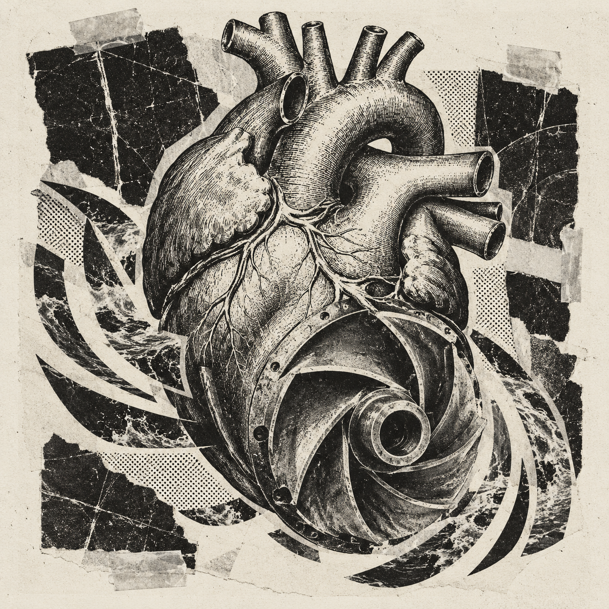

Blood flow.
Better devices.
Blood pumps, cardiovascular devices, and hemodynamics. How do flow fields affect hemocompatibility, and how can design improve device performance?
Postdoctoral Research Associate
Brown University
Division of Applied Mathematics
George Em Karniadakis Group

from devices to the physics underneath.
Computational modeling.
Fluid mechanics.
Medical devices.
I joined George Em Karniadakis’s group in the Division of Applied Mathematics at Brown University in October 2026. My current work centers on numerical simulation of cardiovascular flows and device design optimization, with an additional interest in multiphase flow and heat transfer.
Previously, I worked in the medical-device industry on blood-pump and ECMO simulations, connecting fluid mechanics and transport phenomena with engineering design.
Full curriculum vitae ↗Blood pumps, cardiovascular devices, and hemodynamics. How do flow fields affect hemocompatibility, and how can design improve device performance?
Advection and diffusion coupled with surface reactions at fluid–solid interfaces. Adsorption kinetics, dominant mechanisms, and the scales linking these processes.
Multiphase flow, heat transfer, and scientific computing. Numerical methods that connect physical mechanisms with testable predictions and engineering problems.
Department of Energy and Power Engineering
Doctoral research: computational modeling of ventricular assist devices and blood pumps, clotting-protein adsorption, and pump design optimization.
Energy and Power Systems and Automation
Postdoctoral Research Associate
Division of Applied Mathematics · Karniadakis Group
Senior / CFD Engineer
CFD modeling for ECMO and blood pumps; heat transfer and gas-exchange performance prediction.
Simulation Engineer
Hydraulic performance and physiological compatibility during blood-pump startup.
DOI: 10.1063/5.0255467 ↗Physics-informed computation for coupled transport and Langmuir surface adsorption.
DOI: 10.1063/5.0221924 ↗Coupled transport and surface-adsorption mechanisms in planar Poiseuille flow.
DOI: 10.1063/5.0133789 ↗Blood-pump geometry optimization balancing hydraulic performance and shear stress.
DOI: 10.3390/pr9071211 ↗I study flow, transport, and interfaces
to understand and improve
cardiovascular medical devices.